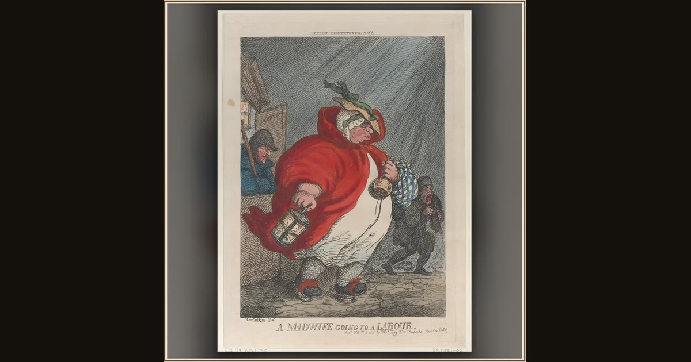

A Midwife Going to a Labour
Thomas Rowlandson · February 12, 1811 · met
Rowlandson’s caricature of a stout midwife hurrying through the rain with lantern and bundle; Socrates calls himself the son of a noble and burly midwife, Phaenarete (149a) Explore its place in Plato's Dialogues, Theaetetus, section 35.